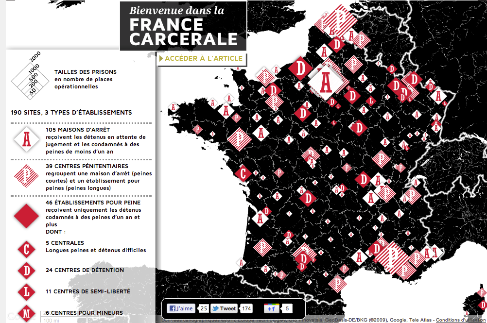
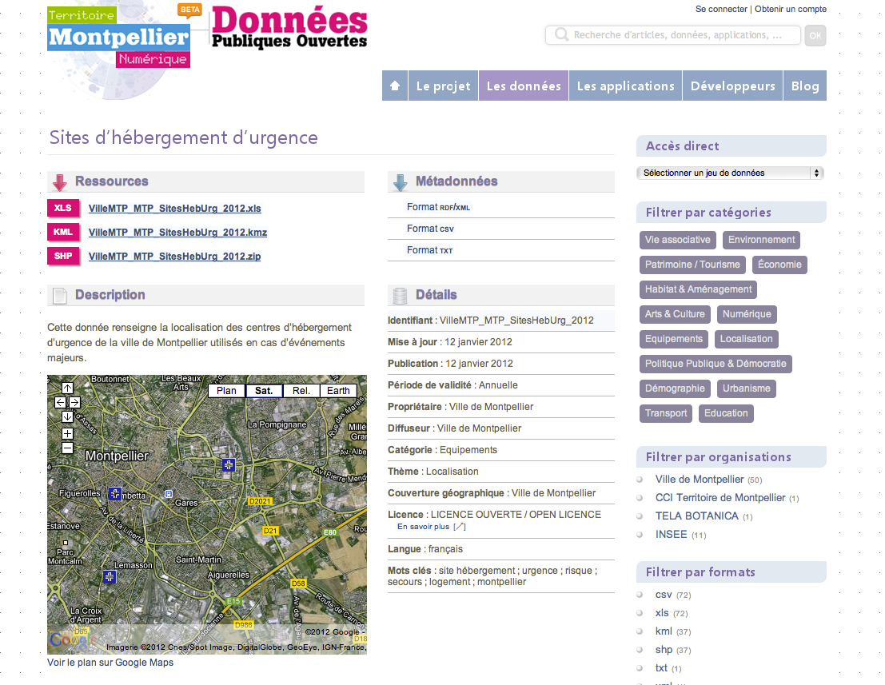
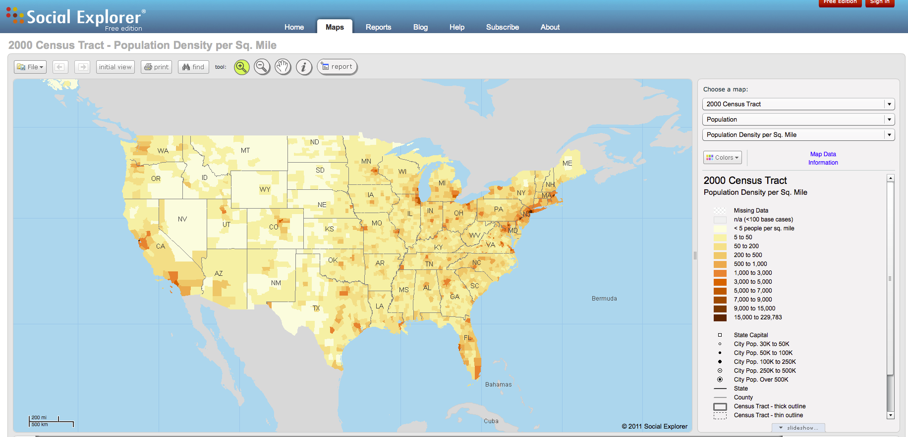
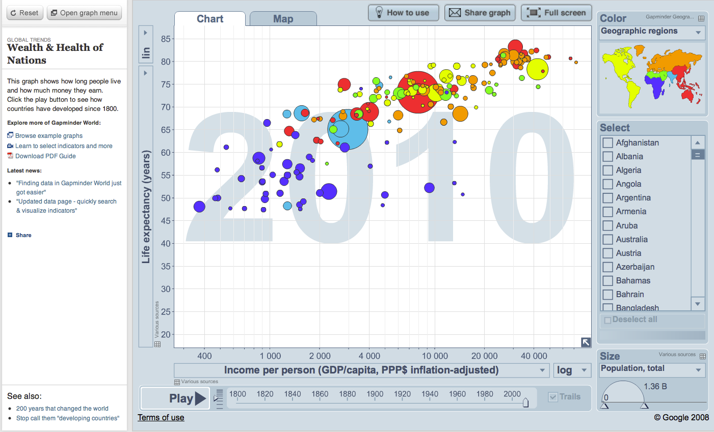

Les plateformes open-data
Tim Beneers Lee
Les données sont accessibles sur le Web
Les données sont structurées
Les formats des données sont ouverts
Les URL permettent d'identifier une donnée
Les données sont liées entre elles
Classification fonctionnelle
-

Gestion de contenu
-
La recherche
-
Visualisation des données
-
L'API
-
Web 2.0 : social / participatif
- Parcequ'il y a un site à construire
- - Expliquez la démarche
- - FAQ
- - Les actualités / évènements
- et un service de communication

- Le point d'accès
aux données - Guider l'utilisateur
(Facet) - Simple

Prévisualisation vs Dataviz




- Pour les développeurs
- Webservices en REST
- Format : xml & JSON
- Donne accès à tout le catalogue
- Possibilté de faire des requêtes

- Créer une communauté autour des données
-
Amméliorer les informations des données
- - Commentaire
- - Note
-
Prévoir un système de remonté d'informations
- - Les anomalies de la plateforme
- - Les anomalies sur les données